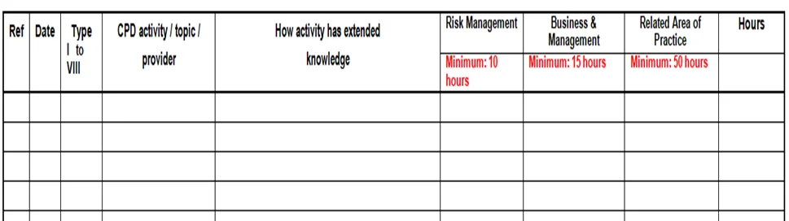
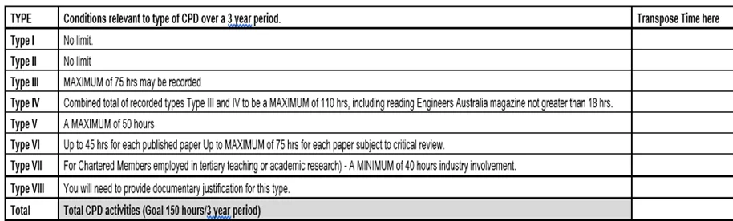

CPD Statement Sample for CDR Writers
CPD means Continuing Professional Development. It refers to the process of tracking and documenting the skills, knowledge, and experience that you gain as you work, both formally and informally to showcase your engineering career. CPD is firmly focused on outcomes - the benefits that professional development can bring you in the real world. Continuous Professional Development is the process of developing professional skills on a continuing basis.
It is a requirement for anyone wishing to relocate to Australia. CPD is a powerful indicator of your professional talents. The assessor for Engineer Australia looks at the CPD statement in your CDR writing to see how far you've progressed in your career. Furthermore, it considers your feedback on career advancement and continuous changes in the engineering industry.
CPD requirements confirm that the candidate is up-to-date with the recent advances in the engineering field. The CDR Report includes a section for Continuing Professional Development, and it has a format for submission, which is listed below:
- Name of the training
- Date of the training
- The period of training
- Location of training
Examples of Continuing Professional Development
- Short courses like Seminars, workshops, ups, conferences, and technical meetings
- Workshop learning activities that extend competence in the area of practice
- A private study that broadens your knowledge and abilities
- Community Engagement on behalf of the engineering team
- Any other structured activities that meet the CPD objectives policy
Components of CPD Statement
The major four components of Continuing Professional Development as per Engineer Australia are listed below:
-
Personal dedication:
This section depicts how to carry yourself ethically and be responsible for your engineering activity. -
Community Obligation:
Community obligation indicates your participation in team activities, risk management, and how you develop long-term goals. -
Workplace value:
This component describes your capability in active involvement in your workplace, decision-making, and collaboration activities. -
Technical Expertise:
Technical expertise shows how well you are creative and skillful in your engineering field. This component tests your expertise in the engineering field.
Tips to improve your CPD
- Your reflective statements should include learning activities as well as personal development. The range of CIM competencies should provide you with enough flexibility to fit the context of your job role and organization. This framework is a logical place to start, so spend some time familiarizing yourself with its various components.
- Don't make the mistake of assuming that all of your statements must be based on formal learning or training experiences. The options are much broader and can essentially apply to all of your marketing activities.
- Consider using post-its, a journal, voice memos, or apps on your phone to record your thoughts to avoid your mental notepad failing you at an important stage.
- To gain complete control over your CPD, start by conducting a reflection session and identifying your areas for improvement.
If you are unsure, we are available 24/7 for your assistance at CDR Writer Australia.
Tips to remember while setting up your CPD
Remember that writing CPD can help you stay updated on progress in your engineering field. Your CPD should be done in a well-organized way and should cover all aspects of your engineering studies.
- It should be in the form of a list.
- It should be brief and to the point.
- It should only describe how the activity relates to your skill growth.
- It should include pertinent information about where you performed that activity, such as the period and location.
- You do not need to include any certificates with your CPD report.
- Make sure to mention any formal, informal, or external CPD activity that meets Engineers Australia's CPD requirements.
- Members of EA may also be required to submit a CPD statement detailing their qualifications, current employment role, abilities, and other significant career accomplishments.
- Before creating your CPD statement, take a look at several CPD engineer Australia samples.
The main features of the CPD process:
- Formalized procedure
- Be self-motivated
- Learn from experience
- Reflective learning and review can assist you in setting development goals and objectives.
Requirements for Continuing Professional Development
CPD requirements over the last three years specify that the candidate is supposed to do at least 150 hours (about six and a half days) of labor. The time distribution pattern is listed below:
- At least 50 hours invested in the area of expertise
- At least 10 hours should show the risk management areas
- At least 15 hours must show in company and skill management
- And the remaining hours should focus on the candidates' actions during their careers
Activities under the Continuing Professional Development
Here are some requirements of activities as per Engineer Australia:
-
Seminars, workshops, conferences, group discussions, short
courses, lectures, and technical meetings.
- The third party from the engineering field takes the workshops and seminars.
- Engineer Australia presentations come under technical discussion.
-
Any post-graduation course taken for an award or a tertiary
program of study but not for an award.
- It includes distance classes or on-class study.
- All those courses should perform some form of a skills assessment test.
-
Any independent research or studies conducted to broaden
skills and knowledge.
- The reading of journals, books, manuals, and research papers
- For auditing purposes, this information is noted after you finish reading the article.
- The presentations in seminars and workshops. These presentations include competency demonstrations to test competence in the engineering field.
-
Community work representing the engineering team
Community engagement services are listed below:
- Volunteering services to the community as an engineer on the board and committee
- Reviewing any publication before its publication
- Representation as an interviewer in a chartered status assessment panel
- Action as a panel member in the tertiary course certified visits
- Additional formal activities that candidates participate in during their working hours.
How to create a CPD statement record?
Engineer Australia has supplied engineers with a manual statement recording mechanism where they can record and manage their CPD records for Engineer Australia Assessment on their own. Engineers Australia has offered the following continuing professional template to record their engineering activities for skills assessment.

Figure 1: CPD Record Template

Figure 2: CPD record template for CPD Type
What are some measures to improve your CPD?
It is on you to take responsibility for your CPD as a member of Engineers Australia. A game plan on how you wish to conduct your profession is equally important. You should also be aware of your expectations from your work and your life goals. You can take complete charge of your CPD by hosting a reflection session and therefore identifying your areas for growth.
Conclusion:
Remember to follow all the guidelines and criteria of the Continuing Professional Development (CPD) in CDR writing given by Engineer Australia. CPD is centered on outcomes or the advantages that professional development can provide in the actual world. Your CPD should be unique to you, no matter where you are in your career or what you want to accomplish. For reference, look for CPD samples for Engineers Australia before beginning. If you want any help from an expert then you can contact our team at CDR Writer Australia.
Table of Content
- CPD Statement Sample for CDR Writers
- Examples of Continuing Professional Development
- Components of CPD Statement
- Tips to improve your CPD
- Tips to remember while setting up your CPD
- The main features of the CPD process
- Requirements for Continuing Professional Development
- Activities under the Continuing Professional Development
- How to create a CPD statement record?
- What are some measures to improve your CPD?